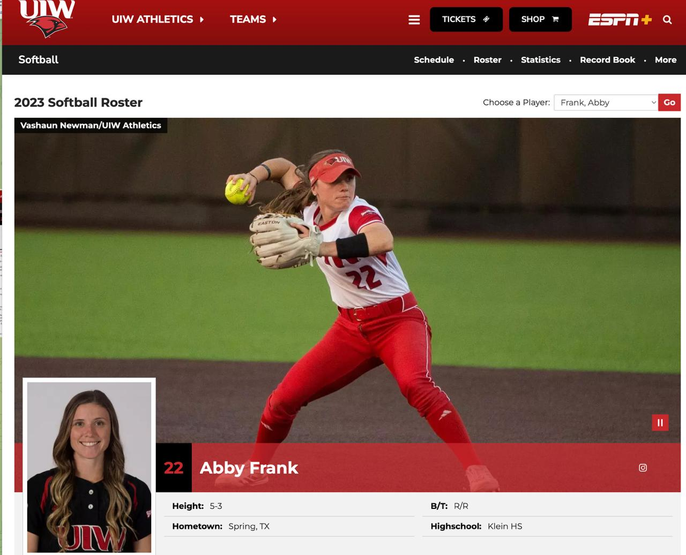
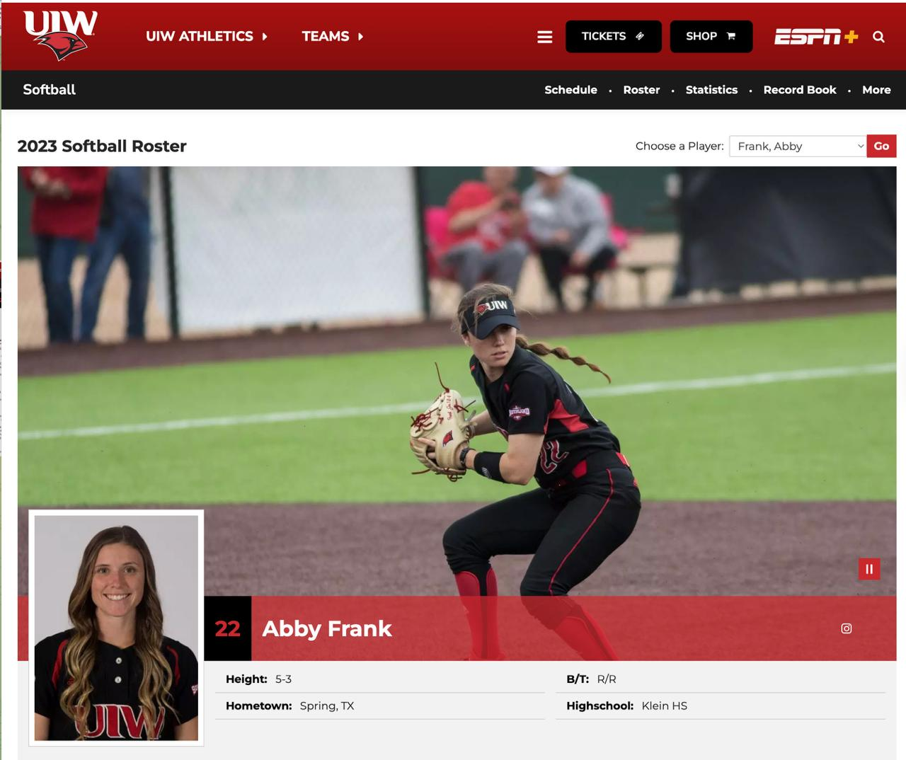

Quick profile
Name: Abby
Age: about 25
Profession: Physician Assistant
Education: Baylor College of Medicine PA program
Connection path: Colton → Sarah → Sarah's friend → Abby
Initial signal: strong physical attraction before meeting, warm-intro setup, zero ethical/professional barriers
Current read: she is not casual, not cold, and not passive. She reaches for him when she wants him. The question is not desire. The question is full openness and integration.
What the four photos actually say
- BCM / black dress: serious, polished, achievement-driven, can move easily in high-credential environments.
- Graduation group: warmth, community, not a lone-wolf achiever, can attach inside trusted circles.
- Softball red action: competitor, grit, intensity, used to discipline and performance pressure.
- Softball black action: control, readiness, defensive awareness, likes to be prepared rather than exposed.
Put together, the public persona is not random. She presents as capable, attractive, socially normal, competitive, and high-functioning. That tracks with what Kasey is actually feeling, namely not just chemistry, but respect.
What has actually happened with Kasey
- She was strongly in before the first date and communicated that through the friend network.
- Date energy converted into real chemistry, not polite openness.
- She has repeatedly reached for closeness in embodied ways, not just through text.
- Date 4 became the emotional threshold night. Kasey brought grief and family reality into the room. She did not flinch.
- She held him, asked questions, normalized heavy life, and stayed present.
- She nurtured concretely: cookies, dinner, packed lunch, remembered details, real acts of care.
- She invited him over the night before her trip and created a real window for closeness before leaving town.
- Airport pickup still standing after all of this. That matters. She is weaving him into real life, not just flirting.
- She also told Kasey she wants to play pickleball with him. That is small on the surface, but it matters. It is another future-oriented, real-world activity signal, not just chemistry in a private room.
- She texted first from Florida and sent a beach photo of the labs belonging to the friend she is visiting. Kasey replied with a Diamond Club photo from behind home plate at the Astros game, and she engaged by commenting on how good the seats and view were. That is not passive maintenance. That is her initiating contact and stepping into his world from a distance.
Sex and what it means
She has already shown real sexual generosity. She initiated. She got on top. She was clearly engaged. She orgasmed from his oral sex twice on separate nights. She complimented him. She framed him as both sweet and confident. While she was on top of him and he was touching her chest, she told him she had small tits. He told her it did not matter. She did not fully believe him at first, so he reiterated it, said he was a butt guy, and she replied, "I have that covered." He answered, "I am aware." That exchange matters. It shows body-image testing, a real need for reassurance, and the fact that she can stay playful and sexual while still exposing an insecurity in the middle of the moment. That part is real.
But here is the key distinction: generous sex is not the same thing as full relational openness. Abby can be warm, eager, orgasmic, and physically responsive while still keeping control over deeper access, pacing, and full surrender. That is why the situation has real upside and real risk at the same time.
Her own statement is important: she has trouble transitioning into sex with new people at first and it feels awkward. So the block is not desire. The block is the final threshold.
Family wiring and communication contradiction
Her parents divorced when she was three. Her bio parents do not speak. Her dad was distant. Her stepmom never became a real emotional home. She built safety sideways, through siblings and usefulness, not through stable vertical parental connection.
She says communication matters to her. That likely feels true to her. But the demonstrated pattern is more mixed. Her family does not communicate well, and over text she still goes flat, controlled, and corporate when the medium gets harder. So there is currently a gap between the value she names and the communication she actually delivers.
That matters because it hits Kasey's Jenny wound directly. Jenny was also a poor communicator who kept him compartmentalized and hidden from her family for months.
Current integrated read
Abby looks like a woman with real desire, real care, and real attachment potential, but also a meaningful gate around full openness. She is strong in presence, weak over text. Strong in embodied care, weaker in overt emotional legibility. Strong in desire, slower at the final threshold of surrender and integration.
That makes her a very real match for Kasey, but not a simple one. The trap is obvious now: Kasey can mistake her warmth, care, and generous sexuality for full openness. Abby can feel sincerely close to him while still keeping part of the relationship controlled. If both stay in that pattern, the old loop returns in better packaging.
If they stay in Version B, the upside is serious. He keeps the frame, says the true thing early, does not wait outside the gate, and does not confuse being wanted with being chosen. She matches sexual warmth with clearer communication, less compartmentalization, and fuller relational inclusion.